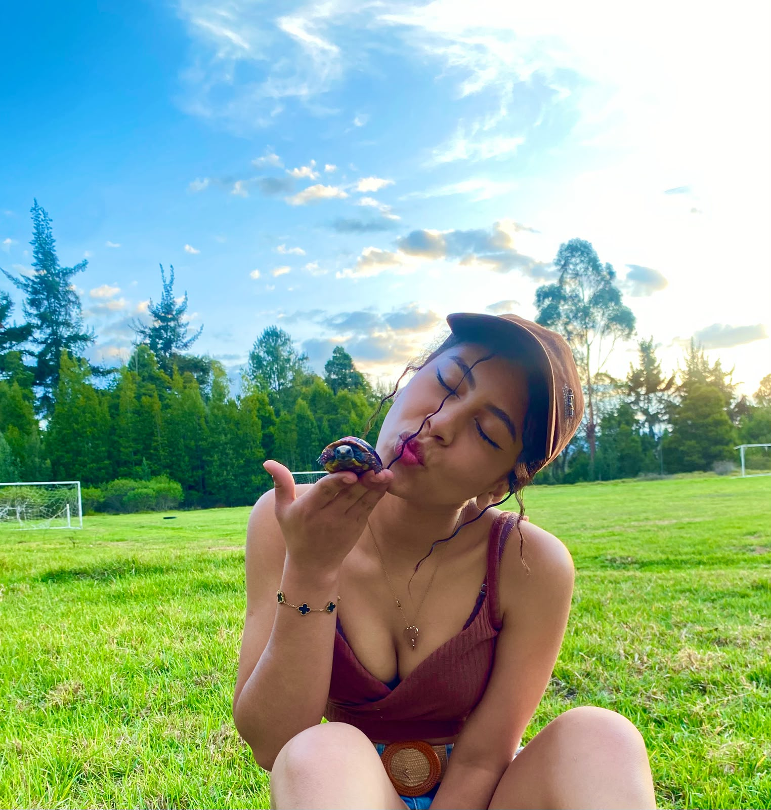

Chukinuni es mi tortuga y lleva conmigo aproximadamente 3 años. Ha sido mi única mascota en toda mi vida, por eso la quiero tanto. Es una compañera muy tranquila y especial para mí.
Para mí, Chukinuni no es solo una mascota, es una compañera. Su caparazón me recuerda que cada uno tiene su propia protección, su propia barrera para cuidarse.
También me identifico mucho con las tortugas porque son muy pacientes, y yo soy una persona paciente. Solo las personas que de verdad me conocen saben lo paciente que puedo llegar a ser.
Cuando encontré a Chukinuni, estaba enferma y en peligro. No lo pensé dos veces: la recogí y le di todos los cuidados que necesitaba. Poco a poco fue mejorando y hoy está mucho mejor, aunque su ojito izquierdo quedó con algunos problemas.
Para mí, haberla salvado es una de las cosas más bonitas que he hecho. Siento que ella me lo agradece con su compañía y su tranquilidad.

Las tortugas nos enseñan que la paciencia también es una forma de fuerza.
Tengo claro que las tortugas no deberían tenerse como mascotas, y que lo ideal es que vivan libres en su hábitat natural. Pero yo no me imagino mi vida sin Chukinuni. La tengo con todos los cuidados posibles y le doy todo lo que necesita. No quiero ni puedo estar sin ella.
Además, no todas las tortugas corren el mismo peligro al ser mascotas. Las tortugas marinas son las más delicadas y las que más sufren en cautiverio, por eso nunca deberían tenerse en casa. Las tortugas terrestres, en cambio, pueden vivir bien si se les dan los cuidados adecuados, como una alimentación correcta, espacio suficiente y atención veterinaria.
Si alguien quiere tener una tortuga como mascota, primero debe informarse bien y asegurarse de poder darle una vida digna. No es un juguete, es un ser vivo que necesita cuidado y respeto.